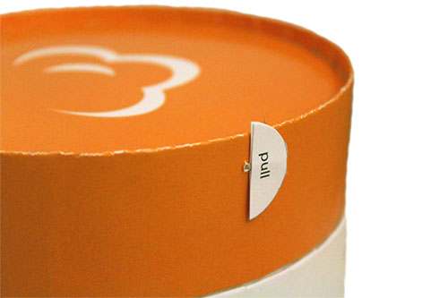
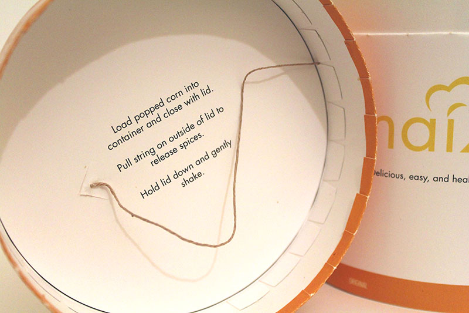
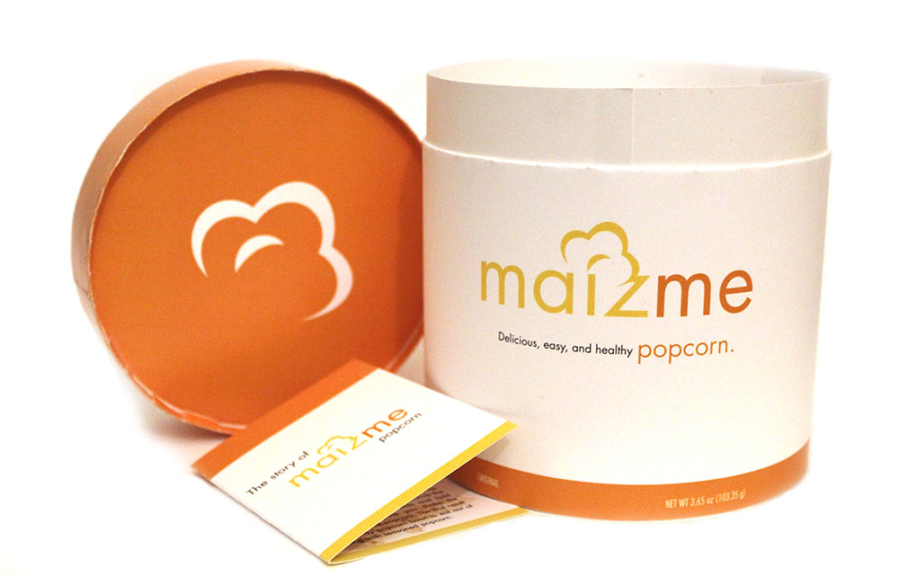

Maizme
2016 | product + branding design
Most people do not know how incredibly unhealthy microwavable popcorn is. It has harmful chemicals and
carcinogens in both the butter and bag, respectively, that can be consumed or inhaled when cooked.
People pay for convenience while making sacrifices to their health. Popcorn is actually quite healthy
when homemade in the kitchen and can be a fun social activity as well.
The goal of Maizme popcorn is to provide a a concientious, healthy, educational, and social experience. This is
the final packaging. View my whole process here.

Maizme is a product that comes with kernals for popping and instructions on how to cook stovetop popcorn. One extra feature incorporates biomimacry of the honeysuckle plant. When you pull the bottom of a honeysuckle, you can draw out the flower's nectar, a tasty surprise. There is a similar function within the lid of the packaging.
 When you load the fresh popcorn into the box, shut the lid and pull a tab on the side, spices are released over the popcorn inside! Release, shake and enjoy fresh, healthy and flavored popcorn. This can come in a variety of flavors, which would be indicated by color of the packaging. The orange color is the original flavor.
